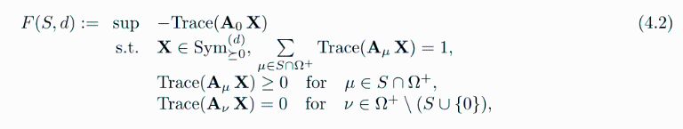

The chromatic number of a coroot lattice
Section 4.2 of
Optimization of trigonometric polynomials with crystallographic symmetry and spectral bounds for set avoiding graphs
Evelyne Hubert, Tobias Metzlaff, Philippe Moustrou, Cordian Riener https://hal.science/hal-03768067
Download this Maple worksheet at https://github.com/TobiasMetzlaff/GeneralizedChebyshev/blob/main/Maple%20Worksheets/chromatic_coroot_lattice.mw
Download the Maple package "GeneralizedChebyshev" at https://github.com/TobiasMetzlaff/GeneralizedChebyshev/blob/main/GeneralizedChebyshev.mpl
| > | restart:
interface(warnlevel=0): with(LinearAlgebra): read("GeneralizedChebyshev.mpl"): with(GeneralizedChebyshev): |
We produce the data for the SDP

where S is the set of strict Voronoi vectors of a coroot lattice.
This gives a lower bound 1-1/F(S,d) for the measurable chromatic number of the lattice for the S-avoiding graph.
(Please read the Maple worksheet "generating_SDP_data" available under https://github.com/TobiasMetzlaff/GeneralizedChebyshev/blob/main/Maple%20Worksheets/generating_SDP_data.mw for instructions of how to produce and use the files in general.)
Cn
An-1
Bn/Dn
For questions, please contact "tobias.metzlaff@rptu.de".